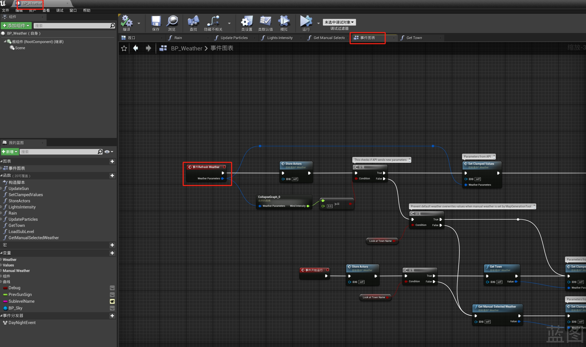

天气
调用流程
1.Python中的 World.set_weather() 调用 client/World.cpp 中的World::SetWeather()，PythonAPI具体天气参数定义在 PythonAPI/carla/source/libcarla/Weather.cpp 。
2.client/detail/Client.cpp 的 Client::SetWeatherParameters()，调用 _pimpl->AsyncCall("set_weather_parameters", weather)。
然后通过class Client::Pimpl类的AsyncCall()方法发起远程异步调用rpc::Client.async_call(function, std::forward<Args>(args) ...)。
3.通过rpc/Client.h 的 async_call()，最后使用rpc::client库中的async_call()进行远程调用服务端。具体天气类别位于 rpc/WeatherParameter.cpp 。
4.在Server/CarlaServer.cpp 中的BIND_SYNC(set_weather_parameters)开始服务端调用。
5.在 Weather.cpp 中的 AWeather::ApplyWeather() 调用 void RefreshWeather(const FWeatherParameters &WeatherParameters) 调用真正改变天气的蓝图，方法实现位于Weather.h中的
UFUNCTION(BlueprintImplementableEvent)
void RefreshWeather(const FWeatherParameters &WeatherParameters);
UFUNCTION(BlueprintImplementableEvent)。

蓝图
BlueprintImplementableEvent 是 Unreal Engine 中的一种特殊的修饰符，用于在 C++ 代码中声明一个可以在 Blueprint 中实现的事件。这意味着你可以在 C++ 类中定义一个事件，并允许开发者在 Blueprint 中提供该事件的具体实现，而不需要编写 C++ 代码来实现该逻辑。这样就能够将游戏逻辑的实现与 C++ 代码解耦，使得逻辑的实现更加灵活，特别是在面向设计师的开发流程中非常有用。
笔记
解耦（Decoupling）是软件设计中的一个重要概念，指的是通过设计使得系统的不同模块或组件之间的依赖关系最小化，从而提高系统的灵活性、可扩展性和可维护性。解耦的目的是使得系统中的各个部分能够相对独立地变化、替换或扩展，而不需要修改其他部分的代码。在游戏开发和其他软件开发中，解耦通常是通过接口、抽象、事件和依赖注入等技术实现的。通过解耦，开发人员可调用。
BlueprintNativeEvent和BlueprintImplementableEvent区别在于： BlueprintNativeEvent多了个c++实现，可以同时调用c++和蓝图的函数； BlueprintImplementableEvent不能c++实现，只能调用蓝图函数。
代码概述
这段 C++ 代码定义了一个名为 AWeather 的类，它主要用于管理和应用天气效果。这个类提供了天气参数设置、后处理效果检查和应用、天气变化通知等功能，并且支持日夜循环状态的设置。以下是详细的说明文档。
类定义与成员变量
AWeather类
功能：管理和应用天气效果，包括后处理效果的检查和应用，以及天气参数的设置和通知。
构造函数：AWeather(const FObjectInitializer& ObjectInitializer)
功能：初始化类成员，查找并设置降水和沙尘暴的后处理材质，设置根组件和 Tick 函数的调用状态。
参数：ObjectInitializer - 用于初始化类成员的FObjectInitializer对象。 成员变量：
- PrecipitationPostProcessMaterial - 降水效果的后处理材质。
- DustStormPostProcessMaterial - 沙尘暴效果的后处理材质。
- ActiveBlendables - 存储当前激活的后处理材质和强度的元组列表。
- Weather - 当前的天气参数。
- DayNightCycle - 日夜循环状态。
成员函数
CheckWeatherPostProcessEffects() 功能：检查当前天气参数，根据降水和沙尘暴的强度，添加或移除相应的后处理材质，并将激活的后处理材质应用到场景中的所有传感器。
步骤：
检查降水强度，如果大于 0.0f，则将降水后处理材质和强度添加到ActiveBlendables列表中；否则，从列表中移除该材质。
检查沙尘暴强度，如果大于 0.0f，则将沙尘暴后处理材质和强度添加到ActiveBlendables列表中；否则，从列表中移除该材质。
获取场景中所有的ASceneCaptureCamera类型的传感器，并将激活的后处理材质和强度应用到每个传感器的后处理设置中。
ApplyWeather(const FWeatherParameters& InWeather) 功能：应用指定的天气参数，包括设置当前天气、检查并应用后处理效果、记录日志信息（如果定义了CARLA_WEATHER_EXTRA_LOG宏），并调用蓝图函数来刷新天气。
参数：InWeather - 要应用的天气参数。
步骤：
调用SetWeather函数设置当前天气参数。
调用CheckWeatherPostProcessEffects函数检查并应用后处理效果。
如果定义了CARLA_WEATHER_EXTRA_LOG宏，则记录当前天气参数的日志信息。
调用RefreshWeather函数刷新天气。
NotifyWeather(ASensor* Sensor) 功能：通知传感器天气相关的变化，包括检查并应用后处理效果和调用蓝图函数来刷新天气。
参数：Sensor - 要通知的传感器。
步骤：
调用CheckWeatherPostProcessEffects函数检查并应用后处理效果。
调用RefreshWeather函数刷新天气。
SetWeather(const FWeatherParameters& InWeather)
功能：设置当前的天气参数。
参数：InWeather - 要设置的天气参数。
SetDayNightCycle(const bool& active)
功能：设置日夜循环状态。
参数：active - 日夜循环的激活状态。
宏定义
CARLA_WEATHER_EXTRA_LOG - 如果定义了该宏，则在应用天气参数时会记录详细的日志信息。
使用示例
```cpp
// 创建AWeather对象
AWeather* WeatherActor = NewObject
// 创建天气参数对象 FWeatherParameters NewWeather; NewWeather.Precipitation = 50.0f; NewWeather.DustStorm = 20.0f;
// 应用天气参数 WeatherActor->ApplyWeather(NewWeather);
// 设置日夜循环状态 WeatherActor->SetDayNightCycle(true);
核心功能 1. 天气参数管理 数据结构：使用 FWeatherParameters 结构体存储当前天气状态（如降水、湿度、风速等）。 参数更新方法： ApplyWeather()：更新参数并触发蓝图事件 RefreshWeather，通知场景元素响应变化。 SetWeather()：静默更新参数，适用于无需立即触发效果的场景。 GetCurrentWeather()：获取当前天气参数副本，用于读取状态。 2. 昼夜循环控制 启用/禁用：通过 SetDayNightCycle(bool) 动态切换昼夜循环逻辑，影响光照和天空盒表现。 状态查询：GetDayNightCycle() 返回当前昼夜循环是否激活。 3. 后期处理效果 材质管理：使用 PrecipitationPostProcessMaterial（降水）和 DustStormPostProcessMaterial（沙尘暴）实现天气视觉特效。 动态混合：ActiveBlendables 映射表跟踪活动材质及其混合强度，通过 CheckWeatherPostProcessEffects() 调整效果的显示强度，实现平滑过渡。 蓝图交互机制 1. 事件驱动更新 RefreshWeather 事件：在蓝图中实现该事件，响应天气变化（如调整粒子系统、修改光照参数）。当调用 ApplyWeather() 或 NotifyWeather() 时自动触发。 传感器通知：NotifyWeather(ASensor*) 允许特定传感器（如摄像头）订阅天气变化，用于触发截图或数据收集。 2. 参数暴露 UPROPERTY 标记：DayNightCycle 和 Weather 参数在编辑器中可见，支持设计师直接调整默认值或进行实时调试。 实现细节 1. 后期处理逻辑 材质混合：根据天气参数（如降水强度）计算材质的透明度，通过 ActiveBlendables 管理多个效果叠加。例如，大雨时增加降水材质的混合权重。 性能优化：仅在参数变化时调用 CheckWeatherPostProcessEffects()，避免每帧计算。 2. 抽象基类设计 不可实例化：标记为 Abstract 强制子类化，确保平台特定的天气效果（如 Vulkan 的着色器差异）可通过派生类实现。 扩展性：子类可覆盖 CheckWeatherPostProcessEffects() 实现自定义效果逻辑，同时复用基类的参数管理。
注意
确保在使用前正确初始化AWeather对象。 后处理材质的路径需要根据实际情况进行调整。 如果需要详细的日志信息，请定义CARLA_WEATHER_EXTRA_LOG宏。